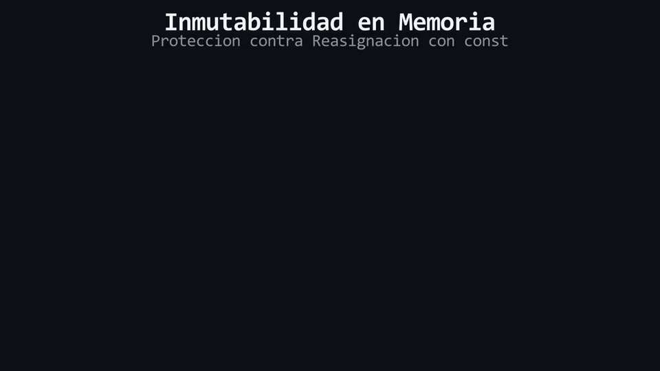
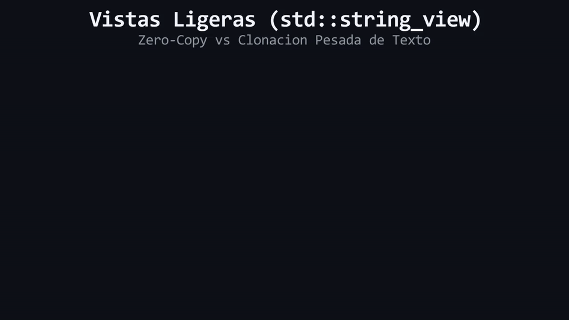

1. Principio de la Escalera
El aprendizaje es estrictamente progresivo. Cada lección se apoya exclusivamente en lo enseñado antes. Cero saltos mágicos de conocimiento ni librerías "caja negra".
El curso interactivo y visual que te enseña a programar desde cero comprendiendo qué ocurre físicamente en la memoria RAM, blindando tu código con RAII y resolviendo fallos reales mediante la metodología "Break-First, Fix-Later".
#include <iostream>
#include <vector>
#include <memory>
int main() {
// 1. Inicialización uniforme: cero basura en RAM
int vidas{3};
// 2. Contenedor dinámico contiguo con .at() verificado
std::vector<int> inventario{10, 20, 30};
// 3. Puntero inteligente RAII (Cero fugas en Heap)
auto heroe = std::make_unique<Guerrero>("Lux", vidas);
std::cout << "LearningCpp: C++ Moderno sin vicios\n";
return 0;
}Cuatro principios pedagógicos inquebrantables que diferencian este curso de cualquier tutorial tradicional.
El aprendizaje es estrictamente progresivo. Cada lección se apoya exclusivamente en lo enseñado antes. Cero saltos mágicos de conocimiento ni librerías "caja negra".
Cada característica moderna existe porque algo en el lenguaje clásico fallaba. El alumno detona un bug real en un demo intencional (Undefined Behavior, Memory Leaks, Slicing) antes de aprender la solución idiomática.
Visualizamos físicamente qué ocurre en la memoria física: Stack vs Heap, direcciones hexadecimales 0x..., VTable de polimorfismo y destrucción determinista con RAII.
Analogías intuitivas en el primer párrafo para romper el hielo, que desvanecen de inmediato hacia la terminología profesional estricta que exige la industria del software.
Haz clic en cualquier tarjeta para ver su desglose completo de lecciones, demos y proyectos.
Toca o haz clic en cualquier tarjeta para abrir la animación en alta resolución con su explicación técnica.
Del código .cpp pasando por preprocesador, ensamblador y linker hasta el binario.
Prevención en compilación de pérdida silenciosa de datos con inicialización uniforme {}.
Comportamiento a nivel de hardware al truncar decimales y solución con static_cast.
Demostración visual de cómo las llaves {} ocultan variables externas en el Stack.
Tabla de saltos por hardware (Jump Table) y prevención de ejecuciones en cascada.
Visualización de la duplicación de memoria en la pila en paso por valor.

Protección de celdas físicas en Stack bloqueadas contra mutaciones ilegales.

Inspección de texto de solo lectura con string_view sin duplicar memoria en Heap.
Compara la fragilidad del C++ arcaico de hace 25 años frente al enfoque idiomático y seguro de LearningCpp.
| Concepto / Tarea |
C++ Clásico (C++98)
|
C++ Moderno (C++17/20)
|
Ventaja en Producción |
|---|---|---|---|
| Espacio de Nombres | using namespace std; |
std:: explícito |
Cero colisiones de nombres globales en proyectos grandes. |
| Salto de Línea | std::endl (Flush Forzado) |
'\n' directo |
Elimina cuellos de botella en I/O al evitar flushes innecesarios. |
| Inicialización | int x; (Basura en RAM) |
int x{0}; (Uniforme) |
Previene basura residual y conversiones estrechas destructivas. |
| Colecciones Dinámicas | int arr[N]; (C-Arrays) |
std::vector<T> con .at() |
Gestión automática de memoria contigua y límites verificados. |
| Gestión de Memoria | new[] / delete[] |
std::unique_ptr<T> (RAII) |
Destrucción determinista 100% libre de fugas de memoria. |
| Aleatoriedad (RNG) | rand() % N (Sesgado) |
std::mt19937 (<random>) |
Distribución uniforme de grado criptográfico y simulación. |
Configura tu compilador con soporte completo para C++17 y C++20 en menos de 5 minutos.
Instala MinGW-w64 a través del gestor oficial MSYS2:
# 1. Abre MSYS2 UCRT64 e instala el toolchain completo:
pacman -S --needed base-devel mingw-w64-ucrt-x86_64-toolchain
# 2. Verifica la versión de g++ (Debe ser >= 13.0):
g++ --versionResolvemos las dudas más habituales sobre el enfoque pedagógico y requisitos del curso.
using namespace std; causa colisiones de nombres impredecibles, y std::endl fuerza un vaciado de buffer (*flush*) innecesario que ralentiza el rendimiento de entrada/salida hasta en un 400%.